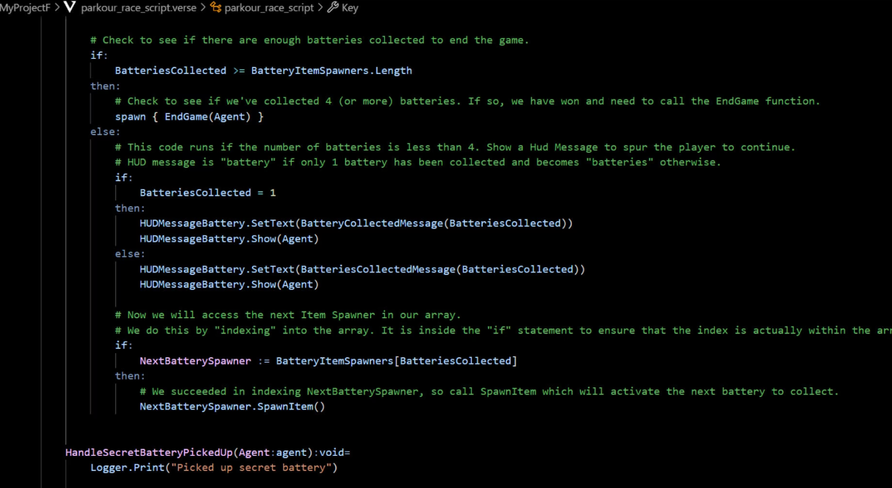
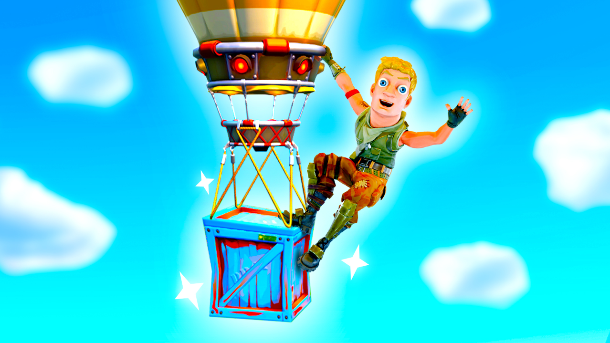
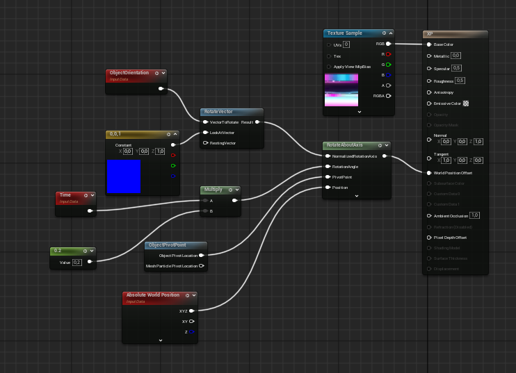
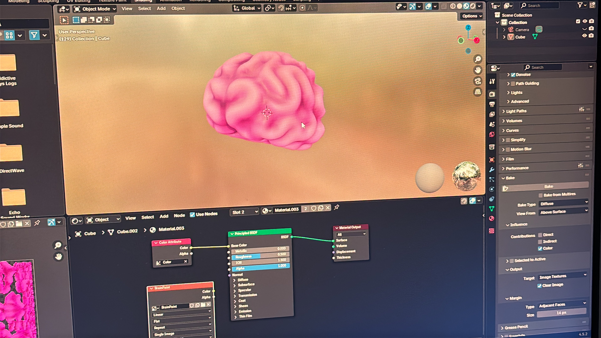
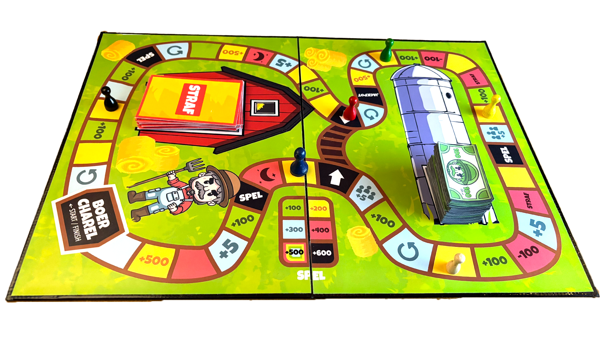
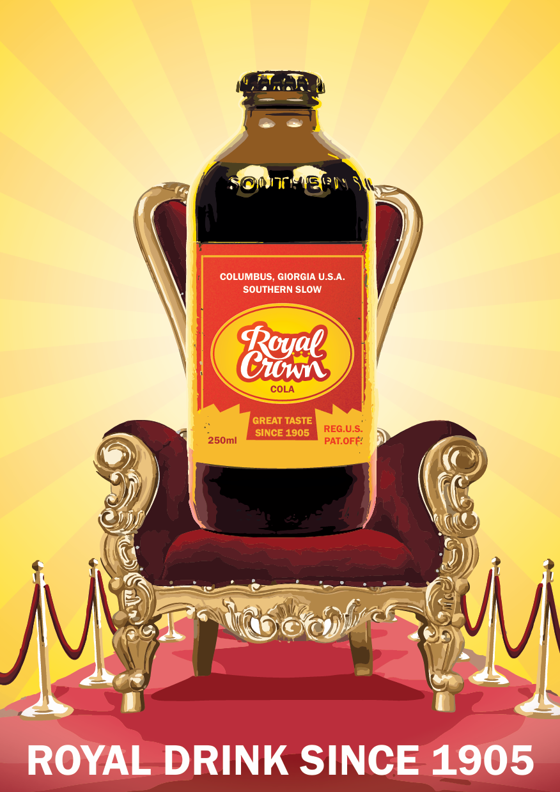
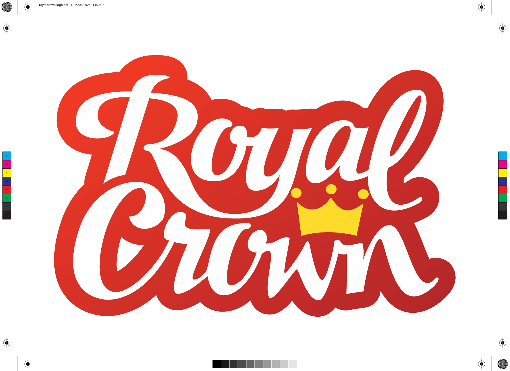

Kinderboek Design
Een handgeschilderd kinderboek van 24 pagina's dat gaat over Floris in Afrika. Ik heb hier 3 weken aan gezeten en het was zeer tof.


Creatief / Minimalistisch / Efficiënt
Designer die buiten de standaard Pinterest-kaders denkt en focust op wat echt werkt.

Ik ben Floris Ooms: ik geloof niet in de standaard Pinterest-designs. Tijdens mijn stage bij Adworks heb ik geleerd hoe belangrijk het is om realistische opdrachten te maken die echt werken in de praktijk. Hoewel ik mijn weg in het programmeren nog aan het vinden ben, ligt mijn kracht in het durven afwijken van de norm.
Waarom DVO? Omdat ik een plek zocht waar mijn creativiteit een doel krijgt.
Mijn broer en ik maken samen ook nog games op UEFN, dat is een gamedevelop software gemaakt alleen voor Fortnite. Het werkt hetzelfde als Unreal Engine. Het is veel trail en error maar daarom net heel leuk als je uiteindlijk je eigen creatie kan spelen. De thumbnails worden gemaakt in blender (met IK rig) en photoshop. Hier zijn wat foto's...




Een handgeschilderd kinderboek van 24 pagina's dat gaat over Floris in Afrika. Ik heb hier 3 weken aan gezeten en het was zeer tof.
Volledig geillustreerd op Adobe Illustrator. Een bordspel waar je helemaal gek van wordt maar wel heel grappig.



Een nieuw concept logo en meer gemaakt voor Royal Crown cola (allemaal drukklaar). Hiervoor heb ik tientallen papieren schetsen en digitale schetsen gemaakt.

